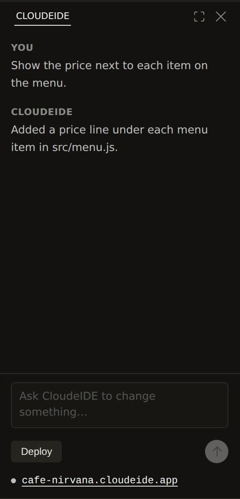
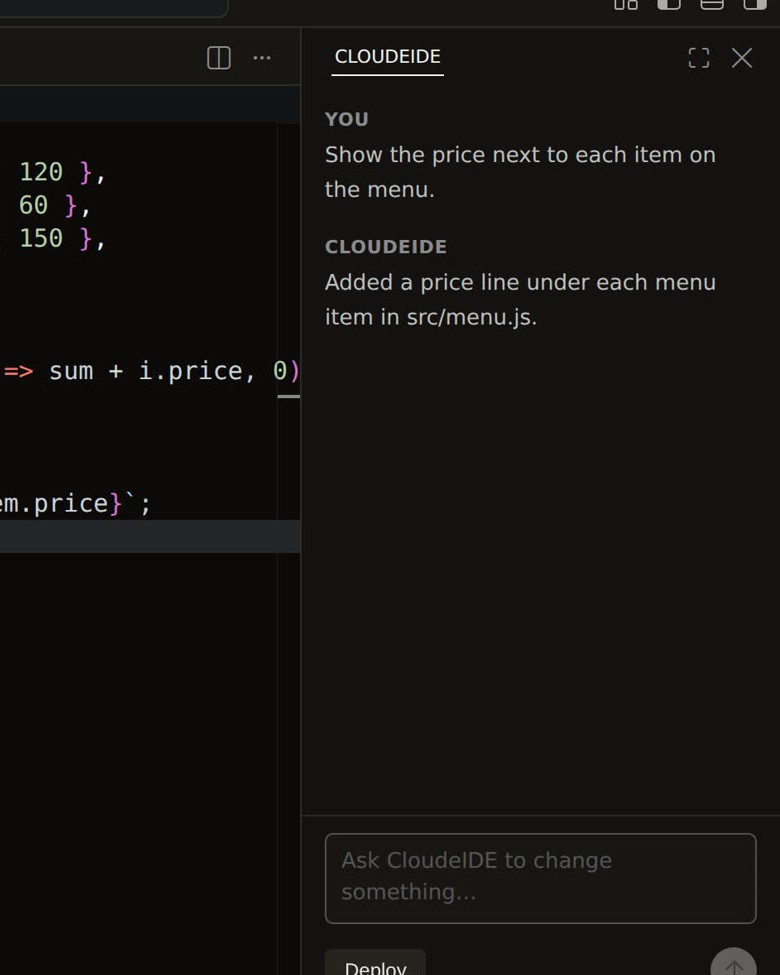
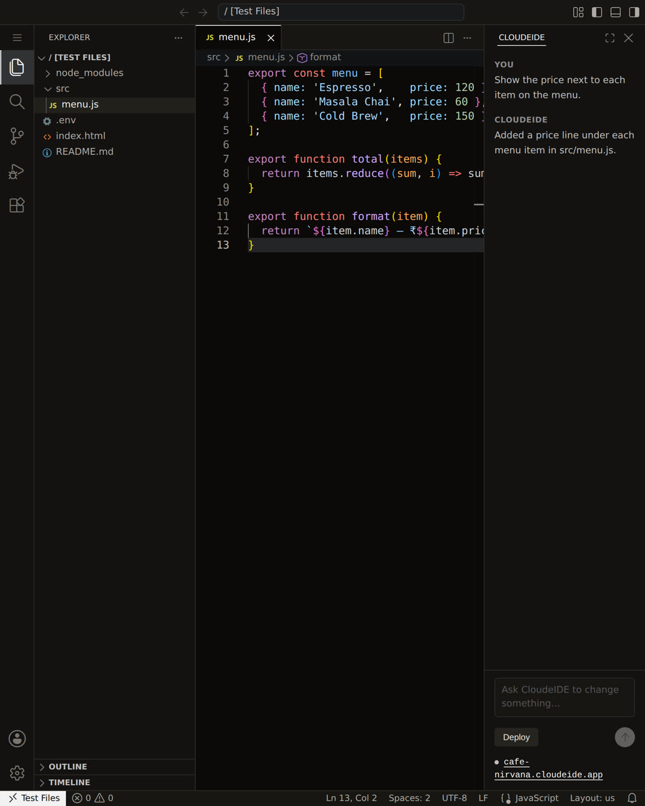
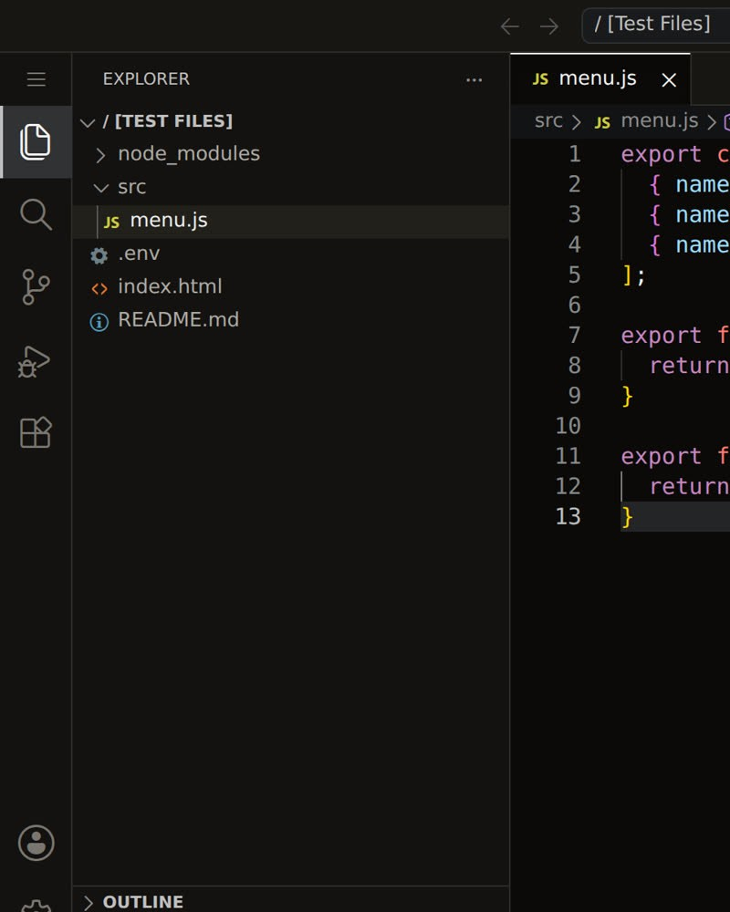

CloudeIDE, your coding agent for building ambitious software.
It reads the real files on your machine, writes the change across as many as it takes, and shows you a diff before anything is saved.

Works with the tools you already use
- Claude Code
- Cursor
- Codex
- MCP
It works on your code,
not a copy of it
Ask in plain words. The agent reads the files on your disk, searches the project for what it needs, and edits as many files as the change takes — creating new ones where it has to.
Nothing is written until you have seen it. Every change arrives as a diff with an Apply button, and the answer you get says what it did rather than what it intends to do.
Download CloudeIDE
One button, one live URL
When the change is right, the same window publishes it. No pipeline to set up, no host to choose.
Static frontends — React, Vue, Svelte, Astro, Next static export.
Download CloudeIDE
Everything you already know,
and an agent that can act
It is VS Code. Your extensions, your keybindings, your terminal, your git.
Open your project
Install it and open the folder you already work in. Nothing to move.
Ask for the change
The agent reads the same files you do, and edits across as many as it needs.
Read the diff
Nothing is saved until you press Apply. Then ship it, from the same window.
There is a CLI, and an MCP server
The same account from your own shell, or from another agent.
npm install -g cloudeidecloudeide logincloudeide deploy .Cursor
cloudeide install cursor
Claude Code
cloudeide install claude-code
Codex
cloudeide install codex
Install it
Your files stay where they are, the terminal is a real terminal, and the agent reads the project you actually have open.
64-bit. Ubuntu 20.04, Debian 11 or newer. Linux tarball if you would rather not install — browser sign-in needs the .deb.
64-bit Windows 10 or newer. Unzip it and run CloudeIDE.exe.

CloudeIDE